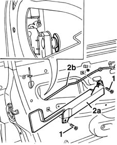
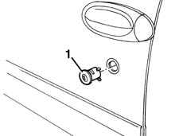
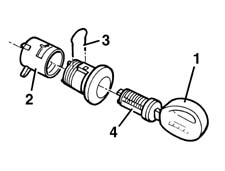

7005C34 front side door lock barrel - r r with door panel removed
- Path
- Procedures > 70 FITTINGS > 7005 PASSENGER COMPARTMENT FRONT SIDE DOORS > 7005C front lock controls > 7005C34 front side door lock barrel - r r with door panel removed
- Kind
- repair procedure (removal / refitting; the operation number is the code)
- Applies to
- all engines; all production periods
- Interactive page
- https://sloeber94.github.io/elrnDB-fMltpl/en/#/2892021
Applies to: all engines; all production periods
Applies to: all engines; all production periods
 Removing
Removing
 Refitting
Refitting7005A04 front side door water guard protection - r r or replace with door panel removed .
1. Undo the bolts.
2. Release the bracket (2a) from the opening intermediate control device (2b) and remove it.
3. Disengage the block retaining clip.

Applies to: all engines; all production periods
1. Remove the key barrel from the outside.

Applies to: all engines; all production periods
If the lock barrel has to be replaced, proceed as follows:
1. Insert the key in the barrel.
2. Move aside the lock actuating link..
3. Release the barrel retaining clip.
4. Withdraw the lock barrel.

Applies to: all engines; all production periods
Refitting
RemovingCheck that the barrel is undamaged.
Insert the key in the barrel.
Insert the lock barrel in its seating.
Engage the retaining clip on the barrel.
Fit the lock actuating link in its seating.
Fit the key barrel from the outside.
Engage the barrel retaining clip.
Engage the opening intermediate control device on the bracket, then fit the bracket.
Tighten the bolts.
7005A04 front side door water guard protection - r r or replace with door panel removed .
Check that the barrel and the lock control mechanism are working properly.
Topics linked from this page (2)
- 5580E ANTI-THEFT DEVICE
- 7005A04 front side door water guard protection - r r or replace with door panel removed